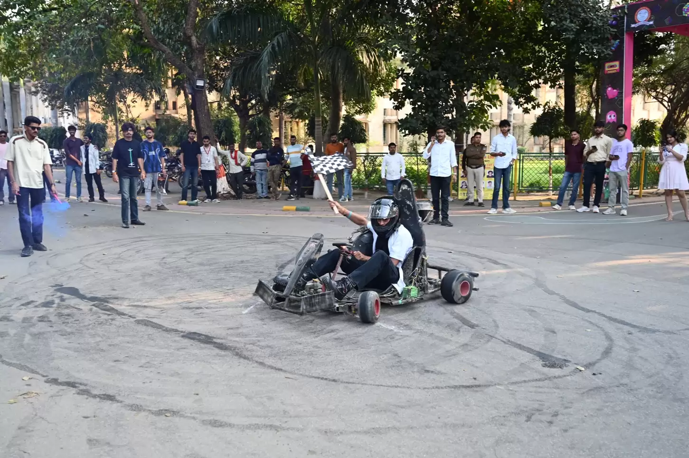

MADHAV INSTITUTE OF TECHNOLOGY & SCIENCE, GWALIOR (M.P.), INDIA
Deemed University
(Declared under Distinct Category by Ministry of Education, Government of India)
NAAC ACCREDITED WITH A++ GRADE
| Screen Reader Access | A | A | A+ | Notification Alerts | Recruitment | Alumni Portal | Contact Us |
|
|
माधव प्रौद्योगिकी एवं विज्ञान संस्थान,
ग्वालियर (म.प्र.), भारत
MADHAV INSTITUTE OF TECHNOLOGY & SCIENCE, GWALIOR (M.P.), INDIA Deemed University (Declared under Distinct Category by Ministry of Education, Government of India) NAAC ACCREDITED WITH A++ GRADE |
|

Madhav Institute of Technology & Science (MITS), Gwalior
is one of the oldest and prestigious engineering institutes
in Madhya Pradesh.
It offers Undergraduate, Postgraduate and Doctoral
programmes in Engineering, Science, Architecture,
Computer Applications and Management.
Madhav Institute of Technology & Science
Race Course Road,
Gwalior,
Madhya Pradesh - 474005
Email : director@mitsgwalior.in
Phone : +91-751-2409354